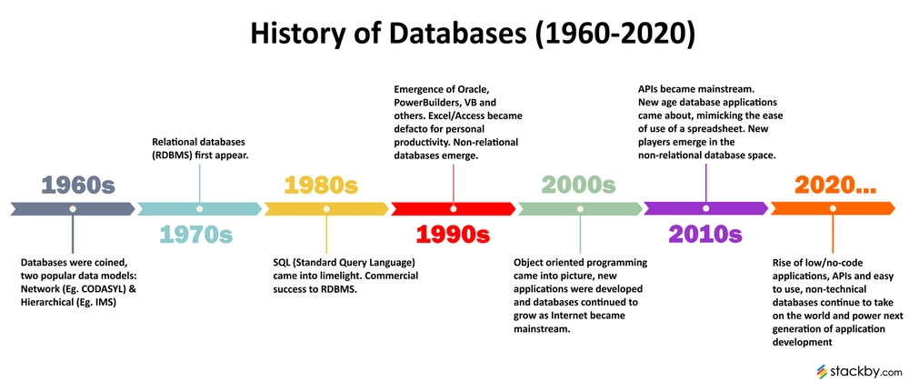

Chapter 1: Introduction (Continuation)
Subchapters 1.5 - 1.9
1.5 Database Design
Database design is the process of determining the structure and organization of data to mirror real-world enterprise requirements.
Phases of Design
- Specification & Analysis: Gathering what users want from the data architecture layer.
- Conceptual Design: Translating needs into a high-level model (ER Model).
- Logical Design: Mapping the conceptual models directly to a platform implementation schema (e.g., Relational Tables).
- Physical Design: Configuring physical access paths, indexing metrics, and file layouts.
1.7 Database Users & the DBA (1.6 was skipped)
People interacting with databases have different technical needs and abstraction levels:
- Naive Users: Interact through pre-compiled point-and-click interface applications (e.g., bank clerks processing teller deposits).
- Application Programmers: Write application logic that targets database engines using APIs (e.g., using FastAPI or Node.js hooks).
- Sophisticated Users: Write direct raw analytic commands (SQL) to explore data without application interfaces.
- Database Administrator (DBA): Holds central structural control over the entire system.
The Database Administrator (DBA)
The DBA manages the database system's health, design, and continuous access operations:
- Schema Definition: Creating or modifying table architectures.
- Storage Structure Access Method Modification: Building or dropping indices to tune system query performance bottlenecks.
- Schema and Physical Organization Modification: Altering parameters to handle workload changes.
- Granting User Access Authorizations: Controlling permissions to enforce enterprise security policies.
- Routine Maintenance: Handling automated backups, preventing disk failures, and monitoring system execution metrics.
1.8 Transaction Management
A Transaction is a collection of operations that performs a single logical function in a database application.
- ACID Properties: To preserve structural integrity, transactions must maintain these four core pillars:
A is for Atomicity
If a transaction fails mid-way, all changes are fully rolled back.
C is for Consistency
A transaction moves the database from one valid, constraint-compliant state to another.
I is for Isolation
Keeps concurrent transactions from interfering with each other. Each runs as if it's the only operation on the engine.
D is for Durability
Once a transaction commits, its data changes are safely written to non-volatile storage and will survive power crashes.
Quick Review
Reflect on transaction management constraints:
- Which ACID property ensures that changes are permanently saved even if the server room loses power a second after a transaction completes?
- If Transaction A reads a row while Transaction B is updating it halfway, which ACID property regulates how visible those uncommitted modifications are?
1.9 History of Database Systems
Understanding the generational evolution of data systems storage tracks:

- Early 1960s (Pre-Relational): IBM's IMS used hierarchical pointer trees. General Electric developed network models (CODASYL). These were hard to write and adapt because queries depended on physical pointer locations.
- 1970s (The Relational Turn): Edgar F. Codd published his breakthrough relational model paper at IBM. This isolated logical queries from low-level physical disk layouts.
- 1980s: SQL grew into an international ISO standard, making relational databases the standard choice for enterprise systems.
- Late 1990s - 2000s: The birth of object-relational extensions, followed by the web explosion. Huge increases in unstructured data led to the NoSQL revolution (Key-Value, Document, Graph databases).
- Recent Trends: Scalable cloud data architectures, specialized column-oriented analytical systems, and modern NewSQL variants that combine NoSQL scale with full relational ACID safety.
Summary of Chapter 1 foundations
- Robust Design Matters: Translating real-world requirements into clean conceptual layers prevents data redundancy anomalies.
- Transactions Guarantee Safety: The ACID rules keep your data reliable, even when facing system failures or high concurrent traffic.
Couple of Announcements~
- Another blooket sesh next meeting (this Thursday July 2).
- With a quiz right after. Coverage is Chap 1 of book (Section 1.6 is skipped).